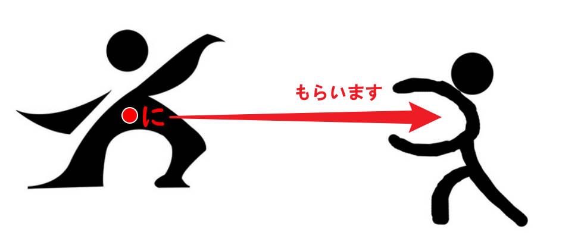
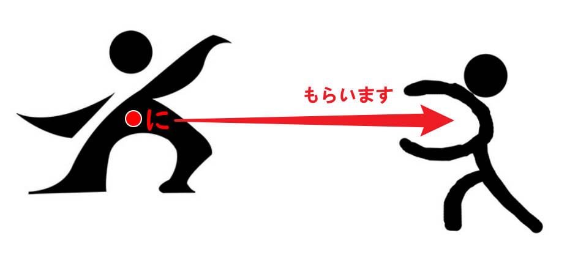

助词用法整理
时间：2023年11月5日 11:50
は
接在主题名词后面，后面再接有关主题的内容、特征的描述。
第1课私は学生です。
后面接地点性名词，表示人或物存在于某地。
第3课先生は教室です。（人）
お手洗いはあそこです。（物）
宾语主题化，接在「名词を动词」中的直接宾语名词后面，放在句首表示强调。
第17课昼ご飯
をはまだ食べていません。荷物
をはここに置かないでください。
か
接在句尾，构成一般疑问句。
第1课劉さんは学生ですか↑。
そうですか↑。＝是吗？（怀疑或惊讶情绪）
接在两个及以上并列疑问句的后面，构成选择疑问句，“～呢？～呢？”。
第2课これはノートですか↑、本ですか↑。
接在句尾，表达对新得知内容的认可。
そうですか↓。＝是嘛。
第2课A：日曜日京都へ行きました。
B：京都ですか↓。いいですね。
第6课在句中接在疑问词后面，不表示疑问，表达“不确定”。
第13课喉が渇きましたから、何か[を]飲みたいです。
冬休みはどこか[へ]行きましたか。
も
接在名词后面，“也是”。
第1课劉さんは学生です。李さんも学生です。
接在疑问词后面，表达全面否定，“～都不”、“～也不”。
第5课どこ[へ]も行きません。
何も食べません。
誰も来ませんでした。
の
前后连接名词，表示前面的名词修饰后面的名词，“的”。
表达从属所属关系。
第1课第2课ミラーさんはIMCの社員です。（所属）
表达内容相关关系。
第2课これはコンピューターの本です。（内容）
表达产地厂家关系。
第3课これは日本のワインです。（产地）
これはサントリーのウイスキーです。（厂家）
接在名词后面，省略后面的名词。
第2课あれは誰のかばんですか。劉さんのです。
接在形容词后面，省略后面的名词。
第12课A：カリナさんのかばんはどれですか。
B：あの赤くて、大きいのです。
お
接头词。后面接名词，表示称呼名词时的郑重语气。
第2课お酒、お土産
接头词。后面接名词，表示对对方或第三者的敬意。
第3课お国はどちらですか。
ご
接头词。后面接名词，表示敬意。
第13课ご注文は？
ご結婚おめでとうございます。
に
接在时间性名词后面，构成时间状语。
第4课６時半に起きます。
接在名词后面，表示单向动作（从来,去到）所指向的对象。（授受关系）
第7课 
 木村さんに花をあげました。
李さんにお金を貸しました。
劉さんに英語を教えます。
山田さんに花をもらいました。
カリナさんに本を借りました。
先生に日本語を習います。
友達に会います。
第6课·单词接在地点性名词后面，表示物或人存在的场所，“在～”。
第10课机の上に本があります。（桌子上有书。）
本は机の上にあります。（书在桌子上。）
受付に木村さんがいます。（前台有木村。）
木村さんは受付にいます。（木村在前台。）
接在期间名词后面，后接次数名词，表示做某事的频率频度。
第11课１か月に２回映画を見ます。
谓语使用表示移动的动词，接在动词ます形后面，或动作性名词后面，表示移动（去、来、回）的目的（做某事）。
第13课神戸へインド料理を食べに行きます。
日本へ美術の勉強に来ました。
接在名词后面，表示动作的目的、目的地、结果。
第15课主语因某动作的结果，而最终落于（存在于）某名词场所。
ここに座ってもいいですか。
京都駅から16番のバスに乗ってください。
主语通过某动作，将宾语最终置于某名词场所。
ここに車を止めてください。
ここに住所を書いてください。
から
接在时间或地点性名词后面，表示起点，“从～”。
第4课９時から働きます。
接在名词后面，表示单向（从来）动作所指向的对象。（授受关系）
第7课特别当对象不是个人，而是公司、学校等组织时，不要用「に」而要用「から」。
山田さんから花をもらいました。
銀行からお金を借りました。
接在句子后面，表示某事情的起因、原因、理由，“因为～，（所以）～”。（因果关系）
第9课今日は子供の誕生日ですから、早く帰ります。
A：毎朝新聞を読みますか。
B：いいえ、読みません。時間がありませんから。
接在动词て形后面，表示严格顺序的在该动作之后进行的动作。
第16课この仕事が終わってから、昼ご飯を食べます。
まで
接在时间或地点性名词后面，表示终点，“到～”。
第4课銀行は３時までです。
までに
接在时间名词后面，表示期限，“最晚不超过～”、“在～时限之前完成”。
第17课まで是到，に是点，までに就是到～之前的某点，动词一般不可延续，瞬间完成。
会議は5時までに終わります。
土曜日までに本を返さなければなりません。
と
前后连接名词，表示名词并列（完全列举），“~和~”、“~与~”、“~跟~”、“~同~”。
第4课銀行の休みは土曜日と日曜日です。
前面连接名词，表示一同行动的伴随对象，“和~”、“与~”、“跟~”、“同~”。
第5课家族と日本へ来ました。
一人で東京へ行きます。
特例（参考で语法）
ね
接在句尾，构成希望得到对方认同的感叹，“啊”、“了吧”。
第4课大変ですね。（希望得到对方认同的感叹）
接在句尾，构成确认等语气，“对吧”、“是吧”。
第4课劉さんの電話番号は158の6666の8888ですね。（确认）
接在句尾，表达对已知晓内容的认可。
第5课そうですね↓。＝是啊。
A：明日は日曜日ですね。
B：あ、そうですね↓。
接在句尾，引出答句，表达对问题的思考，“嗯，……”，“这个问题啊，……”，“让我想想，……”，“Well,……”。
第8课A：お仕事はどうですか。
B：そうですね。忙しいですが、面白いです。
へ
接在地点性名词后面，表示方向，“往～”、“朝～”、“向～”。
后面接表示移动的动词，表示移动的方向。
第5课京都へ行きます。
日本へ来ました。
うちへ帰ります。
で
接在名词后面，表示工具、手段、方法，“用～”、“凭借～”。
第7课スプーンで食べます。
日本語でレポートを書きます。
A：「Thank you」は日本語で何ですか。
B：「ありがとう」です。
接在交通工具后面，后面接表示移动的动词，表示交通方式。
第5课電車で行きます。
タクシーで帰りました。
駅から歩いて帰りました。
特例（参考动词て形）
接在名词后面，表示范围，“在～”。
第12课A：家族でだれがいちばん背が高いですか。
B：弟がいちばん背が高いです。
接在地点性名词后面，表示动作发生的场所，“在～（做～）”。
第6课駅で新聞を買います。
よ
接在句尾，构成提示、提醒语气，“～哟”、“～呢”、“～啦”。
第5课この電車は甲子園へ行きません。次の「普通」ですよ。
北海道に馬がたくさんいますよ。
マリアさん、このアイスクリーム、おいしいですよ。
を
接在名词后面，表示动作的对象（他动词的宾语）。
第6课ジュースを飲みます。
サッカーをします。パーティーをします。宿題をします。
接在地点性名词后面，表示动作的起点、出发点。
第16课7時にうちを出ます。
梅田で電車を降りました。
が
连接两个句子，表示转折，“虽然~，（但是）~”。
第8课日本の食べ物はおいしいですが、たかいです。
接在主语名词后面，强调动作的发出者或后续描述所指的是该主语。
第9课は提示主题，が提示主语。一句话中不能有俩は，强调的部分“が前は后”，根据提问的空缺作答。
A：あの方は誰ですか。
B：あの方は社長です。
A：誰が社長ですか。
B：あの方が社長です。
特别的，考虑到日本人的民族文化习惯（极尽含蓄委婉之能事），在表达以下内容时：
（1）事物的存在、拥有（あります）
（2）个人的能力、好恶、愿望（上手、下手、好き、嫌い、欲しい）
（3）对于某事物的理解（わかります）
应当使用以が提示主语的句式。
私は車があります。
伊藤さんは中国語が上手です。
李さんはイタリア料理が好きです。
私は日本語がわかります。
接在主语名词后面，表示作为存在主体的物或人。
第10课桜があります。
犬がいます。
接在主语名词后面，表示客观现象、事物的状态、性质等。
第14课雨が降っています。
ミラーさんがいませんね。
接在起铺垫作用的引言（开场白）后面，用于接续表达询问、请求、命令等形式的真正意图。
第14课すみませんが、塩を取ってください。
失礼ですが、お名前は？
※正确的日语语法中并不认为作为引言的「が」具有转折意味，但老师认为将其理解为具有转折意味，有助于在实际表达中把握日式思维（“耻”文化、不愿轻易打扰别人）之中的“退却”感觉。
接在主语名词后面再接形容词，构成描述主题特征的部分。
第16课大阪は食べ物が美味しいです。（大阪
的东西好吃。）マリアさんは髪が長いです。（玛丽亚小姐
的头发长。）
や
前后连接名词，表示名词并列（不完全列举），“~呀”。
第10课箱の中に手紙や写真があります。
有时会在列举出的最后一个名词之后加上「など（等）」，“~啥的”、“~等等”。
箱の中に手紙や写真などがあります。
ぐらい/くらい
接在数量词后面，表示大概的数量。
第11课学校に先生が30人ぐらいいます。
15分ぐらいかかります。
だけ
接在数量词或名词后面，表示只有、只是，“只有~”、“仅~”、“只是~”、“就~”。
第11课パワー電気に外国人の社員が一人だけいます。
休みは日曜日だけです。
より
接在名词后面，表示比较的对象，“比～”、“比起～”。
第12课この車はあの車より大きいです。